Data Structures
注意：不要修改标题名称，否则会导致很多地方的链接失效。
Array
...
Dynamic List
...
Linked List
...
Stack
...
Queue and Deque
...
Heap / Priority Queue
Priority Queue是一个ADT（抽象数据类型），它定义了一组行为或操作：
- Enqueue: 入队，可以把带有优先级的元素放入队列中
- Dequeue(Extract-Min/Max): 取出队列中优先级最低/最高的元素
实现Priority Queue的方式有很多种，常见的有：
- Heap，最常见和最高效的实现方式，查找/移除根元素是O(1)，插入和删除其他元素是O(logN)
- 无序数组/链表：插入快，但是查找/删除最高级优先元素要O(N)
- 有序数组/链表：查找/删除最高优先级元素O(1)，但插入O(N)
- BST，平均O(logN)，但可能退化到O(N)
Heap Implementation
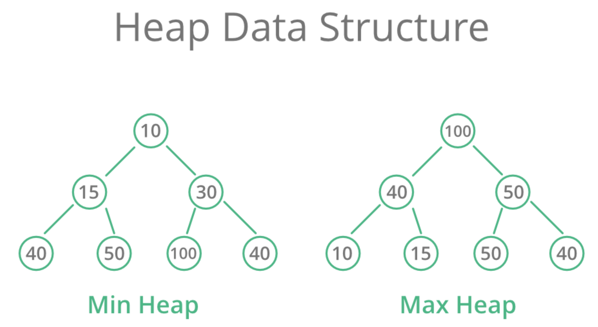
Heap的定义是：所有的parent node都必须小于或等于（最小堆）/大于或等于（最大堆）其所有的子节点。因此，最小堆的根节点就是最小的节点，最大堆的根节点就是最大的节点。
- Min-Heap 最小堆：每个父节点都小于等于其任何子节点
- Max-Heap 最大堆：每个父节点都大于等于其任何子节点
Heap的重要性质包括：
- 局部有序：只保证父子节点的顺序关系，不保证兄弟节点或者不同子树之间的具体大小关系
- 完全二叉树：heap必须是完全二叉树。（除了最后一层，其他层都是完全填满的；如果最后一层存在空缺，也必须是从左到右连续填充的，不允许中间有空隙，也不允许右边有节点而左边空缺）
- 允许重复值
根据上述性质，一般在实现的时候用一个array就可以存储heap的内容。而这个实现原理也解释了为什么一定要把heap设计成完全二叉树：
完全二叉树的父子节点关系可以用数组索引来直接计算：
假设一个节点在数组中的索引是 i（我们通常从 0 或 1 开始索引）：
- 如果数组从索引 0 开始：
- 父节点的索引：
(i - 1) // 2(整除) - 左子节点的索引：
2 * i + 1 - 右子节点的索引：
2 * i + 2 - 如果数组从索引 1 开始（有些算法喜欢这样，计算更简洁）：
- 父节点的索引：
i // 2 - 左子节点的索引：
2 * i - 右子节点的索引：
2 * i + 1
实现一个heap，主要功能实现方法如下：
- sift up: 不断和parent比较，如果比parent小就交换位置
- sift down：不断和childs比较，如果比child大，就和更小的那个child交换
- heapify：从第一个非叶子节点开始，向前遍历，逐一sift down
- add: 把新元素放到数组的最末尾，然后执行sift up操作
- pop: 把list[0]和list[-1]调换位置，然后对新的list[0] sift down
重要速算，对于一个长度为n的最小堆list：
- 第一个非叶子节点：(n // 2) - 1
- 第k小的元素：无法直接计算
- 节点i的父节点：(i - 1) // 2
- 节点i的左子节点：2 * i + 1
- 节点i的右子节点：2 * i + 2
- 非叶子节点的数量：n // 2
- 叶子节点的数量：n - n // 2
- heap的高度：math.floor(math.log2(n))
Insertion, Deletion
我们以数组从索引 0 开始为例来解释。
堆的核心操作是插入 (Insertion) 和 删除根节点 (Deletion of Root) ，这两个操作都需要在执行后 恢复堆的属性 。
(1) 插入 (Insertion) - heapq.heappush() 的逻辑
当向堆中插入一个新元素时，为了保持堆的属性：
- 添加到末尾： 将新元素添加到数组的 末尾 （即完全二叉树的下一个可用位置）。
- 上浮 (Heapify-up / Sift-up): 新添加的元素可能破坏了堆的顺序属性（因为它可能比父节点更小或更大）。因此，需要将这个新元素 向上移动 ，与它的父节点比较：
- 如果新元素比父节点 更符合堆的属性 （例如，在最小堆中新元素更小），就交换它们的位置。
- 重复这个过程，直到新元素找到一个合适的位置（即它不破坏父子关系），或者到达根节点。
这个上浮过程的时间复杂度是 O(log N) ，因为元素最多从叶子节点移动到根节点，路径长度是树的高度（log N）。
(2) 删除根节点 (Deletion of Root) - heapq.heappop() 的逻辑
删除堆的根节点（即最大堆的最大元素或最小堆的最小元素）是另一个核心操作：
- 移除根并替换： 将根节点（数组的第一个元素）移除。为了保持完全二叉树的结构，将数组最后一个元素移到根节点的位置。
- 下沉 (Heapify-down / Sift-down): 新放在根位置的元素可能不符合堆的顺序属性（因为它可能比子节点更大或更小）。因此，需要将这个元素 向下移动 ，与它的子节点比较：
- 选择子节点中更符合堆属性的那个（例如，在最小堆中选择更小的子节点，在最大堆中选择更大的子节点）。
- 如果当前元素比选中的子节点 不符合堆的属性 （例如，在最小堆中它比子节点大），就交换它们的位置。
- 重复这个过程，直到元素找到一个合适的位置（即它不破坏父子关系），或者到达叶子节点。
这个下沉过程的时间复杂度也是 O(log N) ，因为元素最多从根节点移动到叶子节点。
python中一般直接用heapq，但如果要自己写的话，也不难：
class MinHeap:
def __init__(self):
"""
初始化一个空的最小堆。
堆的底层使用一个列表来存储元素。
"""
self.heap = []
def _parent_index(self, index):
"""计算父节点的索引"""
return (index - 1) // 2
def _left_child_index(self, index):
"""计算左子节点的索引"""
return 2 * index + 1
def _right_child_index(self, index):
"""计算右子节点的索引"""
return 2 * index + 2
def _has_parent(self, index):
"""检查节点是否有父节点"""
return self._parent_index(index) >= 0
def _has_left_child(self, index):
"""检查节点是否有左子节点"""
return self._left_child_index(index) < len(self.heap)
def _has_right_child(self, index):
"""检查节点是否有右子节点"""
return self._right_child_index(index) < len(self.heap)
def _swap(self, index1, index2):
"""交换两个索引位置的元素"""
self.heap[index1], self.heap[index2] = self.heap[index2], self.heap[index1]
def _sift_up(self, index):
"""
元素上浮操作：当新元素插入或元素值变小后，
将其与其父节点比较，如果小于父节点则交换，直到满足堆属性。
"""
while self._has_parent(index) and self.heap[index] < self.heap[self._parent_index(index)]:
parent_idx = self._parent_index(index)
self._swap(index, parent_idx)
index = parent_idx # 继续向上比较
def _sift_down(self, index):
"""
元素下沉操作：当根元素被移除或元素值变大后，
将其与其子节点比较，选择更小的子节点交换，直到满足堆属性。
"""
while self._has_left_child(index): # 只要有左子节点，就可能有子节点
smaller_child_idx = self._left_child_index(index)
# 如果有右子节点，并且右子节点比左子节点更小，则选择右子节点
if self._has_right_child(index) and \
self.heap[self._right_child_index(index)] < self.heap[smaller_child_idx]:
smaller_child_idx = self._right_child_index(index)
# 如果当前节点比最小的子节点还小，则满足堆属性，停止下沉
if self.heap[index] <= self.heap[smaller_child_idx]:
break
else:
self._swap(index, smaller_child_idx)
index = smaller_child_idx # 继续向下比较
def insert(self, item):
"""
向堆中插入一个新元素。
时间复杂度：O(logN)
"""
self.heap.append(item) # 将元素添加到列表末尾
self._sift_up(len(self.heap) - 1) # 对新元素执行上浮操作
def extract_min(self):
"""
移除并返回堆中最小的元素（即根节点）。
时间复杂度：O(logN)
"""
if self.is_empty():
raise IndexError("Heap is empty, cannot extract minimum.")
if len(self.heap) == 1:
return self.heap.pop() # 如果只有一个元素，直接弹出
min_item = self.heap[0] # 最小元素总在根部
self.heap[0] = self.heap.pop() # 将最后一个元素移到根部
self._sift_down(0) # 对新的根元素执行下沉操作
return min_item
def peek_min(self):
"""
查看堆中最小的元素（根节点），但不移除。
时间复杂度：O(1)
"""
if self.is_empty():
return None
return self.heap[0]
def is_empty(self):
"""检查堆是否为空"""
return len(self.heap) == 0
def size(self):
"""返回堆中元素的数量"""
return len(self.heap)
def __str__(self):
"""方便打印堆的内容（内部列表表示）"""
return str(self.heap)
使用这个最小heap：
# 创建一个最小堆实例
min_heap = MinHeap()
# 插入元素
print("--- 插入元素 ---")
min_heap.insert(30)
print(f"插入 30: {min_heap}") # [30]
min_heap.insert(10)
print(f"插入 10: {min_heap}") # [10, 30] - 10 上浮到根部
min_heap.insert(50)
print(f"插入 50: {min_heap}") # [10, 30, 50]
min_heap.insert(5)
print(f"插入 5: {min_heap}") # [5, 10, 50, 30] - 5 上浮到根部
min_heap.insert(20)
print(f"插入 20: {min_heap}") # [5, 10, 20, 30, 50] - 20 上浮到正确位置
print(f"\n当前堆中最小元素 (不移除): {min_heap.peek_min()}")
print(f"堆的大小: {min_heap.size()}")
# 提取最小元素
print("\n--- 提取最小元素 ---")
print(f"提取: {min_heap.extract_min()}") # 提取 5
print(f"堆变为: {min_heap}") # [10, 30, 20, 50] -> 10 成为新根，50 下沉
print(f"提取: {min_heap.extract_min()}") # 提取 10
print(f"堆变为: {min_heap}") # [20, 30, 50]
print(f"\n再次查看最小元素: {min_heap.peek_min()}")
print(f"堆的大小: {min_heap.size()}")
# 继续提取直到堆空
print("\n--- 继续提取直到堆空 ---")
while not min_heap.is_empty():
print(f"提取: {min_heap.extract_min()}")
print(f"堆变为: {min_heap}")
print(f"\n堆是否为空？ {min_heap.is_empty()}")
# min_heap.extract_min() # 这会引发 IndexError
...
Push, Pop
（1）Push (插入) 操作
- 目的： 将一个新元素添加到堆中，并确保堆的属性（最小堆的父节点小于等于子节点，最大堆的父节点大于等于子节点）仍然保持。
- 如何工作：
- 添加到底部： 新元素会被放到堆底层数组的最后一个可用位置（也就是逻辑上的完全二叉树的下一个叶子节点）。
- 上浮 (Sift-Up / Heapify-Up)： 新添加的元素可能比它的父节点更“优先”（例如，在最小堆中它比父节点小）。为了恢复堆的属性，这个新元素会不断地 向上移动 ，和它的父节点比较并交换位置，直到它到达一个合适的位置（即不再比父节点更优先），或者到达堆的根部。
- 时间复杂度： O(log N) 。因为元素最多从叶子节点移动到根节点，移动的步数就是树的高度，而树的高度是
log N（N 是堆中元素的数量）。
（2）Pop (提取) 操作
- 目的： 移除并返回堆中优先级最高的元素（对于最小堆是最小的元素，对于最大堆是最大的元素）。同时，确保堆的属性在移除后仍然保持。
- 如何工作：
- 移除根部： 优先级最高的元素总是在堆的 根部 （数组的第一个位置）。首先取出这个元素。
- 替换根部： 为了保持完全二叉树的结构，将堆底层数组的最后一个元素移到根节点的位置。
- 下沉 (Sift-Down / Heapify-Down)： 新放在根位置的元素可能不符合堆的属性（因为它可能比子节点更不优先）。这个元素会不断地 向下移动 ，和它的子节点比较：选择那个更“优先”的子节点（例如，在最小堆中选择较小的子节点），如果当前元素不符合堆的属性就交换位置。重复这个过程，直到元素找到一个合适的位置，或者到达叶子节点。
- 时间复杂度： O(log N) 。因为元素最多从根节点移动到叶子节点，移动的步数是树的高度
log N。
Heapify
Heapify：
- 目的： 将一个任意顺序的列表或数组原地（in-place）转换为一个有效的堆（最小堆或最大堆）。
- 如何工作：
- 从后向前： 它的核心思想是从列表中最后一个非叶子节点开始（这些节点以下的所有子树都已经是有效的堆），然后依次向前（向根部）处理每一个节点。
- 逐个下沉： 对于每个处理到的节点，都对其执行一次 “下沉” (Sift-Down) 操作。通过这种自底向上的方式，确保每个子树都满足堆的属性，直到整个列表都被组织成一个合法的堆。
- 时间复杂度： O(N) 。尽管里面包含了多次 O(log N) 的下沉操作，但由于大部分下沉操作发生在树的低层（下沉距离短），所以摊还分析后，总体的建堆时间复杂度是线性的，非常高效。
举例说明/示例：将长度为 10 的列表转换为最小堆
假设我们有以下列表：
my_list = [19, 7, 100, 36, 16, 3, 1, 2, 8, 4]
列表长度 N = 10
在找到第一个需要处理的节点前，我们来复习一下完全二叉树的结构特征：
- 如果一个节点有子节点，那它一定是 在数组的前半部分 。
- 如果一个节点没有子节点，那它一定是在数组的后半部分
因此heapify这个list的流程如下：
- 找出第一个需要处理的节点：
- 最后一个非叶子节点的索引是
(N // 2) - 1 = (10 // 2) - 1 = 5 - 1 = 4。 - 所以，我们从索引
4的元素16开始，向前处理。 - 开始
sift down循环： （从索引 4 倒数到索引 0） - 处理索引 4 的元素 (
16)：16的子节点是索引(2*4+1)=9的4。16与4比较，4更小，所以交换16和4。- 列表变为：
[19, 7, 100, 36, 4, 3, 1, 2, 8, 16] - （
16已经下沉到底部，不再有子节点，停止下沉）
- 处理索引 3 的元素 (
36)：36的子节点是索引(2*3+1)=7的2和索引(2*3+2)=8的8。- 两个子节点中
2最小。 36与2比较，2更小，所以交换36和2。- 列表变为：
[19, 7, 100, 2, 4, 3, 1, 36, 8, 16] - （
36现在是叶子节点，停止下沉）
- 处理索引 2 的元素 (
100)：100的子节点是索引(2*2+1)=5的3和索引(2*2+2)=6的1。- 两个子节点中
1最小。 100与1比较，1更小，所以交换100和1。- 列表变为：
[19, 7, 1, 2, 4, 3, 100, 36, 8, 16] - （
100现在是叶子节点，停止下沉）
- 处理索引 1 的元素 (
7)：7的子节点是索引(2*1+1)=3的2和索引(2*1+2)=4的4。- 两个子节点中
2最小。 7与2比较，2更小，所以交换7和2。- 列表变为：
[19, 2, 1, 7, 4, 3, 100, 36, 8, 16] - （
7现在没有子节点，停止下沉）
- 处理索引 0 的元素 (
19)：19的子节点是索引(2*0+1)=1的2和索引(2*0+2)=2的1。- 两个子节点中
1最小。 19与1比较，1更小，所以交换19和1。- 列表变为：
[1, 2, 19, 7, 4, 3, 100, 36, 8, 16] - （现在
19在索引2。它的子节点是索引(2*2+1)=5的3和索引(2*2+2)=6的100。） 19与3和100比较，3最小。19与3比较，3更小，所以交换19和3。- 列表变为：
[1, 2, 3, 7, 4, 19, 100, 36, 8, 16] - （现在
19在索引5。它没有子节点，停止下沉）
- 建堆完成！
- 最终的堆列表（最小堆）可能是：
[1, 2, 3, 7, 4, 19, 100, 36, 8, 16]
sift down
sift down（下沉）操作，顾名思义，就是让一个位于堆上方的元素（通常是根节点，或者某个因值增大而不再符合堆属性的节点） 向下移动 ，直到它在堆中找到一个合适的位置，从而恢复整个堆的属性。
它就像把一个太“重”或太“大”（在最小堆中）或太“轻”或太“小”（在最大堆中）的石头放在一堆已经排好序的石头顶部，然后让它慢慢滚下去，直到找到它该在的位置。
这里我们以最小堆 (Min-Heap) 为例来解释 sift down：
- 起点：
sift down通常从一个可能不符合堆属性的节点开始，比如在extract_min操作后被移到根部的新元素，或者在heapify过程中某个被处理的父节点。 - 比较子节点：
- 这个节点会与其子节点进行比较。
- 在最小堆中，我们需要找到它 最小的那个子节点 。
- 重要： 必须确保比较的子节点实际存在（即索引没有超出数组范围）。
- 判断并交换：
- 如果当前节点的值大于它最小的子节点的值（这违反了最小堆的父节点小于等于子节点的属性），那么就交换当前节点和这个最小子节点的位置。
- 如果当前节点的值已经小于或等于其最小的子节点的值，那么它就符合堆的属性了，
sift down操作 停止 。 - 继续下沉：
- 如果发生了交换，那么当前节点（现在在新的位置）可能仍然比它的新子节点大。所以，我们 继续重复步骤 2 和 3 ，以新的位置作为起点，让元素继续向下“下沉”，直到它不再需要交换，或者已经到达了堆的底部（即没有子节点了）。
示例图解（最小堆的 sift down）
假设我们有一个最小堆，移除了 1 之后，将最后一个元素 100 放在了根部：
初始状态（要下沉的节点是 100）：
100 (当前节点，违反了堆属性，因为它比子节点大)
/ \
10 20
/ \ / \
30 40 50 60
-
第一次比较和交换：
-
100的子节点是10和20。 - 最小的子节点是
10。 100 > 10，所以交换100和10。
交换后：
10
/ \
100 20 (当前节点现在是 100)
/ \ / \
30 40 50 60
第二次比较和交换：
- 当前节点
100的子节点是30和40。 - 最小的子节点是
30。 100 > 30，所以交换100和30。
交换后：
10 (当前节点，违反了堆属性，因为它比子节点大)
/ \
30 20
/ \ / \
100 40 50 60 (当前节点现在是 100)
- 第三次比较和停止：
- 当前节点
100没有子节点了（它现在是叶子节点）。 sift down操作 停止 。
最终状态（堆属性恢复）：
10
/ \
30 20
/ \ / \
100 40 50 60
关键点
- 局部操作：
sift down是一种局部操作。它只涉及当前节点和其直接子节点之间的比较和交换。 - 递归性质： 整个过程是递归的（虽然通常用循环实现），元素沿着一条路径向下移动。
- 时间复杂度： 由于元素向下移动的路径长度就是树的高度，因此
sift down的时间复杂度是 O(log N) ，其中 N 是堆中元素的数量。
sift down 和 sift up（上浮）是堆能够高效地执行插入和删除操作的基石，确保了堆的平均 O(log N) 性能。
总结来说sift down就是：
- 不断比较i和2i+1和2i+2，找到更小的那个交换
...
第K大
维护一个大小为K的最小堆，堆顶就是第K大的元素。
这里其实蕴含了两个步骤，以班上成绩[88, 90, 95]为例，加入要继续加入一个92：
- 那么首先让92入队
- 如果我们要找第3大的成绩，那么我们就维护一个大小为3的最小堆
- 现在堆里已经有4个元素了：[88,90,92,95]，把最小的88挤出去
- 这个时候堆变成了[90,92,95]，堆顶还是第三大的数字！
第K小的话就是反过来，维护一个大小为K的最大堆，堆顶就是第K小的元素。
...
...
...
...
Set & Map
...
..
Tree
...
Concept of Tree
Tree是一种非线性的数据结构，由一系列节点Node和连接这些节点的边（Edge）组成。它被用来表示具有层级关系的数据。
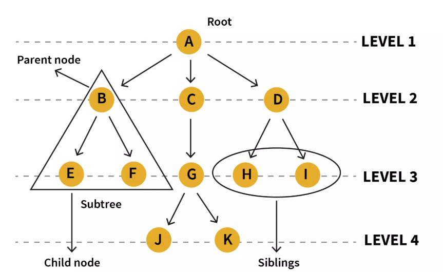
在一个tree中，核心术语包括：
- Node：Tree的基本组成部分，每一个Node都包含一个数据值和指向其子节点的引用
- Root：根节点，是整个Tree中唯一没有父节点的节点。
- Edge: 连接parent node和child node的线
- Parent: 父节点
- Child: 子节点
- Siblings: 拥有相同父节点的多个节点
- Leaf Node: 没有任何子节点的节点
- Internal Node: 至少有一个子节点的节点
- Path: 从一个节点到另一个节点所经过的边的序列
- Depth of a Node: 从root到该节点的路径长度。根节点的深度为0.
- Height of a Tree: 所有节点中深度的最大值，即root到最远leaf node的路径长度。空tree的height一般记为-1.
在python中，一般的tree通过以下方式实现：
class TreeNode:
"""
通用树的节点类
"""
def __init__(self, value):
self.value = value # 节点存储的值
self.children = [] # 一个列表，用来存储所有子节点对象
def add_child(self, child_node):
"""
为当前节点添加一个子节点
"""
# 确保传入的是TreeNode的实例
if isinstance(child_node, TreeNode):
self.children.append(child_node)
else:
# 如果传入的是值，则为其创建一个节点
self.children.append(TreeNode(child_node))
def __repr__(self, level=0):
"""
一个辅助函数，用于美观地打印树的结构（递归实现）
"""
# level参数用来控制缩进，表示当前节点的深度
ret = " " * level + repr(self.value) + "\n"
for child in self.children:
ret += child.__repr__(level + 1)
return ret
# --- 创建树 ---
# 1. 创建根节点
root = TreeNode("CEO")
# 2. 创建第一层子节点 (VP)
vp_eng = TreeNode("VP of Engineering")
vp_mkt = TreeNode("VP of Marketing")
# 3. 将VP节点加为CEO的子节点
root.add_child(vp_eng)
root.add_child(vp_mkt)
# 4. 为VP of Engineering添加子节点 (Directors)
dir_infra = TreeNode("Director of Infrastructure")
dir_app = TreeNode("Director of Application")
vp_eng.add_child(dir_infra)
vp_eng.add_child(dir_app)
# 5. 为Director of Infrastructure添加子节点 (Managers)
# 这里我们直接传入值，让add_child方法自动创建节点
dir_infra.add_child("Cloud Manager")
dir_infra.add_child("Data Center Manager")
# 6. 为VP of Marketing添加子节点
vp_mkt.add_child("Director of Sales")
# --- 打印树的结构 ---
print(root)
最后print(root)的结果如下：
'CEO'
'VP of Engineering'
'Director of Infrastructure'
'Cloud Manager'
'Data Center Manager'
'Director of Application'
'VP of Marketing'
'Director of Sales'
...
Tree's Traversal
对于通用树，最常见的遍历方式是深度优先搜索 (DFS) 和 广度优先搜索 (BFS) 。
1. BFS / Level-Order Traversal)
BFS 按层级顺序访问节点，先访问第一层（根），再访问第二层的所有节点，以此类推。这通常需要借助一个队列 (Queue) 来实现。
Python
from collections import deque
def traverse_bfs(root_node):
"""
使用BFS遍历树
"""
if not root_node:
return
nodes_to_visit = deque([root_node]) # 使用双端队列，效率更高
while len(nodes_to_visit) > 0:
current_node = nodes_to_visit.popleft() # 从队列左边取出节点
print(current_node.value, end=" -> ")
# 将当前节点的所有子节点加入队列的右边
for child in current_node.children:
nodes_to_visit.append(child)
# 使用上面创建的树进行BFS遍历
print("BFS Traversal:")
traverse_bfs(root)
print("End")
BFS 输出:
BFS Traversal:
CEO -> VP of Engineering -> VP of Marketing -> Director of Infrastructure -> Director of Application -> Director of Sales -> Cloud Manager -> Data Center Manager -> End
2. DFS
DFS 会尽可能深地探索树的分支。当节点的所有子树都访问完毕后，才回溯到父节点。DFS 通常使用递归 (Recursion) 或栈 (Stack) 来实现。
递归实现非常自然和简洁。
Python
def traverse_dfs(node):
"""
使用DFS（前序遍历）递归遍历树
"""
if not node:
return
# 前序遍历：先访问当前节点
print(node.value, end=" -> ")
# 然后递归地访问每个子节点
for child in node.children:
traverse_dfs(child)
# 如果是后序遍历，就把print语句放到for循环之后
# 使用上面创建的树进行DFS遍历
print("\nDFS (Pre-order) Traversal:")
traverse_dfs(root)
print("End")
DFS 输出:
DFS (Pre-order) Traversal:
CEO -> VP of Engineering -> Director of Infrastructure -> Cloud Manager -> Data Center Manager -> Director of Application -> VP of Marketing -> Director of Sales -> End
...
Binary Tree
Binary Tree虽然是一种General Tree，但是其应用范围非常之广，所以一般都单独作为一个大类目来讲。
...
Types of Binary Trees
...
Full Binary Tree
...
Complete Binary Tree
...
Perfect Binary Tree
...
Balanced Binary Tree
...
Skewed Binary Tree
...
Traversal
...
DFS
DFS 的核心思想是“一条路走到黑，不撞南墙不回头”。它会尽可能深地探索树的分支。当一个节点的子树被完全访问完毕后，才会回溯到其父节点，探索其他分支。
对于二叉树，根据访问根节点的时机不同，DFS 分为三种主要形式：
- 前序遍历 (Pre-order): 根 -> 左 -> 右
- 访问顺序 ：先访问当前节点，然后递归地访问左子树，最后递归地访问右子树。
- 应用 ：常用于创建树的副本、序列化树。
- 中序遍历 (In-order): 左 -> 根 -> 右
- 访问顺序 ：先递归地访问左子树，然后访问当前节点，最后递归地访问右子树。
- 应用 ：在二叉搜索树（BST）中，中序遍历会得到一个有序的序列。
- 后序遍历 (Post-order): 左 -> 右 -> 根
- 访问顺序 ：先递归地访问左子树，然后递归地访问右子树，最后访问当前节点。
- 应用 ：常用于删除树（先删除子节点再删除父节点）、计算表达式树。
DFS 实现 (Python, 递归)
class TreeNode:
def __init__(self, val=0, left=None, right=None):
self.val = val
self.left = left
self.right = right
def dfs_traversal(root):
if not root:
return
# 前序遍历 Pre-order
print(root.val)
self.dfs_traversal(root.left)
self.dfs_traversal(root.right)
# 中序遍历 In-order
self.dfs_traversal(root.left)
print(root.val)
self.dfs_traversal(root.right)
# 后序遍历 Post-order
dfs_traversal(root.left)
dfs_traversal(root.right)
print(root.val)
BFS
BFS 的核心思想是“一层一层地访问”。它从根节点开始，先访问完第一层的所有节点，然后再访问第二层的所有节点，以此类推，像水波纹一样从中心向外扩散。
- 实现方式 ：BFS 通常需要借助一个队列 (Queue) 来实现。
- 访问顺序 ：也称为 层序遍历 (Level-order Traversal) 。
BFS 实现 (Python, 迭代)
from collections import deque
def bfs_traversal(root):
if not root:
return
queue = deque([root]) # 1. 初始化队列，放入根节点
while queue: # 2. 当队列不为空时循环
node = queue.popleft() # 3. 从队列头部取出一个节点
print(node.val, end=" -> ") # 4. 访问该节点
# 5. 如果它有左孩子，将其加入队列尾部
if node.left:
queue.append(node.left)
# 6. 如果它有右孩子，将其加入队列尾部
if node.right:
queue.append(node.right)
print("End")
...
Max Depth
最大深度是指从根节点到最远的叶子节点所经过的 节点数量 （或边的数量+1）。这是一个典型的可以用 DFS 解决的问题。
思路 ：
一棵树的最大深度，等于 1 (当前节点本身) 加上其左、右子树中较大的那个深度。这是一个完美的递归定义。
实现 (Python, 递归)
def max_depth(root: TreeNode) -> int:
# Base Case: 如果节点为空，其深度为0
if not root:
return 0
# 递归地计算左子树的深度
left_depth = max_depth(root.left)
# 递归地计算右子树的深度
right_depth = max_depth(root.right)
# 当前树的深度 = 1 + 左右子树深度的最大值
return 1 + max(left_depth, right_depth)
Max Width
最大宽度是指在树的所有层级中，节点数量最多的那一层的节点数。这是一个典型的可以用 BFS 解决的问题，因为BFS天生就是按层处理的。
思路 ： 使用BFS进行层序遍历。在遍历每一层时，记录下该层的节点数量，并与一个全局的最大宽度变量进行比较和更新。
实现 (Python, 迭代)
from collections import deque
def max_width(root: TreeNode) -> int:
if not root:
return 0
max_w = 0
queue = deque([root])
while queue:
# 当前层的节点数量，也就是当前层的宽度
level_width = len(queue)
# 更新最大宽度
max_w = max(max_w, level_width)
# 遍历当前层的所有节点，并将它们的子节点加入队列
for _ in range(level_width):
node = queue.popleft()
if node.left:
queue.append(node.left)
if node.right:
queue.append(node.right)
return max_w
如果要找到最大宽度并记录内容，并且包含中间的None（leetcode662），需要对整个tree进行“编号”。用BFS遍历的时候，每一层的队列的第一个元素，一定是这一层最左边的元素；而队列的最后一个元素，一定是这一层最右边的元素。
在binary tree中，所有的编号都是可以直接算出来的：
- 根节点root的位置是0
- 父节点的位置是
i - 左孩子是
2*i + 1 - 右孩子是
2*i + 2
...
Max Diameter
如果我们想找到整个Binary Tree中的最长路径，这个路径不一定是经过root的（可以想象这棵树非常不平衡，那么最长的路径可能在root的左边或者右边）
如果直到如何求最大depth，那么max diameter这里首先要明白，diameter相当于是edge的数量。比如对于：[1, 2, 3]，假设2是parent而1和3是child，那么长度就是1-2-3共两条边，长度就是2.
那么最长path就应该等于下列三者中最长的一个：
- 经过当前node的最大path，即左孩子的深度+1+右孩子的深度+1。这里加的1就是node到左孩子或者右孩子的那条边。
- 左子树中最大的path
- 右子树中最大的path
我们可以维护一个全局变量max_diameter，这样我们只需要traverse整个tree，并找到每一个node处的：
- 经过当前node的最大path
就可以找到整个tree中最大的diameter了。
Check Same Tree
DFS检查：
class Solution(object):
def isSameTree(self, p, q):
# 1. 如果两个节点都是 None, 它们是相同的
if not p and not q:
return True
# 2. 如果只有一个是 None, 或者它们的值不同, 则不相同
if not p or not q or p.val != q.val:
return False
# 3. 递归地检查左右子树
return self.isSameTree(p.left, q.left) and self.isSameTree(p.right, q.right)
BFS检查：
from collections import deque
class Solution(object):
def isSameTree(self, p, q):
queue = deque([(p, q)]) # 队列中存储节点对
while queue:
node1, node2 = queue.popleft()
# 首先处理 None 的情况
if not node1 and not node2:
continue # 两个都是 None, 是相同的, 继续检查下一对
if not node1 or not node2 or node1.val != node2.val:
return False # 一个为 None 或值不同, 直接判为不等
# 将子节点对加入队列
queue.append((node1.left, node2.left))
queue.append((node1.right, node2.right))
return True # 如果队列处理完都没发现不同, 则两树相同
...
Check Sub Tree
检查一个tree是否是另一个tree的subtree。
BST - Binary Search Tree
在BST中，所有节点左边的都更小，右边的都更大。
BST一般被设计为一个“集合”，即所有的元素的值都是唯一的，不允许重复。因为如果重复的话就没办法实现其快速搜索的特性了。
BST是全局有序的，也就是对于Tree中的任何Node，上述规则都是适用的。
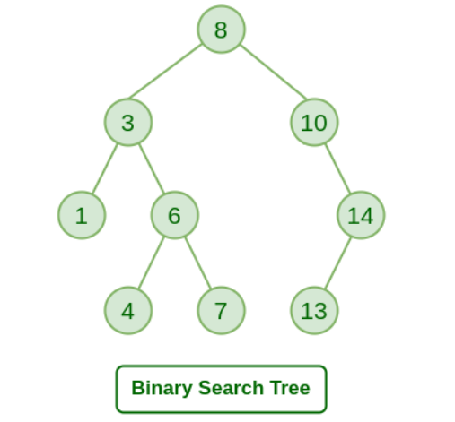
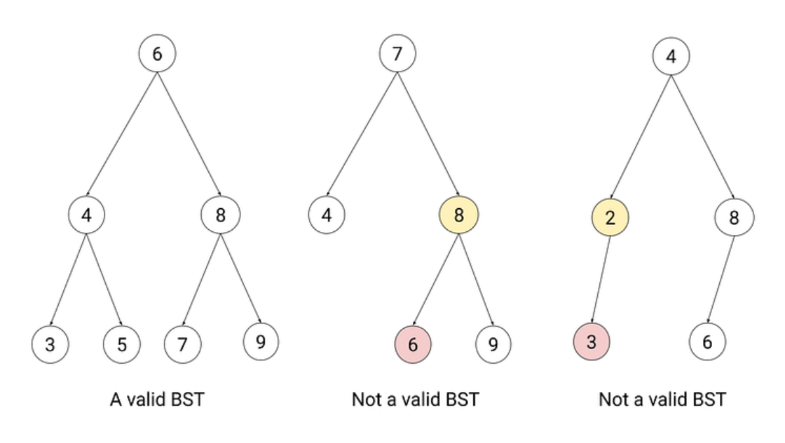
General BST
Search in BST
对于一个array，Binary Search的时间复杂度是O(logN)。那么在BST中，如果我们要找一个target，从root开始，如果node小于target，我们就往右节点走；否则往左节点。这样很快就能找到target。
Search的算法实现（查找是否存在子节点）：
def search(root, target):
if not root:
return False
if target > root.val:
return search(root.right, target)
elif target < root.val:
return search(root.left, target)
else:
return True # 如果要return节点，就return root
如果要return target节点，把return True改为return root就可以了。
...
Insertion & Delete
我们先来看一个最基本的BST，他满足最基本的BST要求，即左边总是比node小，右边总是比node大。我们要实现的功能也很简单，一个是插入，一个是删除。
首先来看insert操作。其思路就是，从root开始找，如果新值比当前节点 小 ，就往左找；如果新值比当前节点 大 ，就往右找，直到找到一个 None（空位），然后插入新节点。
在实现上，可以用Recursion来实现：
# Insert a new node and return the root of the BST.
def insert(root, val):
if not root:
return TreeNode(val)
if val > root.val:
root.right = insert(root.right, val)
elif val < root.val:
root.left = insert(root.left, val)
return root
然后看remove操作，删除操作比插入要复杂得多，因为它需要考虑在移除一个节点后，如何“修复”树的结构，以保证它仍然满足“左小右大”的黄金定律。
删除的第一步总是相同的：首先，像查找一样，在树中找到要删除的那个节点。
找到之后，根据这个节点有几个子节点，我们分为三种情况来处理：
情况一：要删除的节点是叶子节点 (没有子节点)
这是最简单的情况。
- 逻辑 ：直接把它从树上“摘掉”即可。
- 操作 ：将其父节点的对应指针（
left或right）设置为None。
图示：删除 20
Code snippet
graph TD
subgraph Before
30 --> 15
15 --> 20
end
subgraph After
30 --> 15'
style 15' stroke:#000,stroke-width:2px
end
情况二：要删除的节点只有一个子节点
- 逻辑 ：让它的子节点“越级”接替它的位置。
- 操作 ：将其父节点的对应指针，直接指向它的那个唯一的子节点。
图示：删除 15
Code snippet
graph TD
subgraph Before
30 --> 15
15 --> 20
end
subgraph After
30 --> 20
end
情况三：要删除的节点有两个子节点
这是最复杂，也是最核心的情况。我们不能简单地删除它，因为这样会留下两个“孤儿”子树。
- 逻辑 ：我们不能凭空创造一个节点，所以必须在它的后代中找一个“替身”来顶替它的位置。这个“替身”必须能完美地维持“左小右大”的规则。
- 谁能当替身？ 有两个最佳人选：
- 中序后继 (In-order Successor) ：它的右子树中的最小节点。
- 中序前驱 (In-order Predecessor) ：它的左子树中的最大节点。
通常我们选择第一种（中序后继）来实现。
-
操作步骤 (以“中序后继”为例) ：
-
找到替身 ：从要删除节点的右孩子出发，然后一路向左走到尽头，那个节点就是“中序后继”。
- 偷梁换柱 ：将“中序后继”的 值 ，复制到我们要删除的节点上。
- 转换问题 ：现在，原节点的值已经被替换，但树里出现了一个重复的节点（那个“中序后继”）。我们的问题就从“删除一个有两个孩子的节点”转换成了“ 删除那个中序后继节点 ”。
- 删除替身 ：因为“中序后继”是其所在子树中最小的，所以它最多只有一个右孩子（不可能有左孩子）。因此，删除它就变成了我们上面已经解决的情况一或 情况二 。
如何通俗理解呢？
我们用一个“办公室调动”的例子来解释为什么必须这么做。
场景 ：假设我们要开除部门主管 50。主管 50 手下有两大业务团队：左团队（所有员工编号都 < 50）和右团队（所有员工编号都 > 50）。
我们的困境 ：我们不能直接让 50 走人，因为他走了之后，这两大团队就没人管了，整个部门的组织架构就乱了。我们必须找一个合适的替身来接替 50 的位置。
谁是最佳替身？ 这个替身必须满足：
- 他必须比 左团队所有人都强 （值更大）。
- 他必须比 右团队所有人都弱 （值更小），这样才能服众。
符合这个条件的完美人选就是 右团队里最弱的那个人 （即“中序后继”）。在我们的例子里，他就是右子树中值最小的节点。
# 1. 找到右子树的最小节点（即中序后继）
least = root.right
while least.left:
least = least.left
# 2. 先把当前的root，也就是当前的节点的值替换为删掉的最小节点的值
root.val = least.val
# 3. 删除找到的这个右子树的最小节点
root.right = self.deleteNode(root.right, least.val)
这个操作其实是一个非常聪明的“障眼法”或者说“问题转换法”。
successor = ...：我们找到了右团队里最弱的那个员工（中序后继），我们叫他55号员工。root.val = successor.val: 这是最关键的一步，叫做“偷梁换柱”。我们并没有移动任何节点，只是把55号员工的身份牌（值）拿过来，贴在了主管50的办公室门上。现在，从外面看，主管办公室里的人已经是55了。原来的50实际上已经消失了。root.right = self.deleteNode(...): 现在出现了一个新问题：公司里有了两个55号员工！一个在主管办公室，一个还在右团队原来的位置上。我们必须把右团队里那个多余的55号员工开除掉。
为什么这个新问题更简单？
因为我们去找的那个替身（中序后继 55），他是他所在团队里最弱的（值最小），所以他 绝对不可能有左孩子 ！因此，开除他，就变成了我们之前已经解决的“情况一（没有孩子）” 或 “情况二（只有一个右孩子）”的简单问题。
我们没有直接解决“如何删除一个有两个孩子的复杂节点”这个问题，而是把它巧妙地转换成了“如何删除一个最多只有一个孩子的简单节点”的问题。这是一个经典的算法思想： 将复杂问题转化为已知解的简单问题 。
至此，删除操作完成，整棵树的“左小右大”规则依然被完美地保持着。
完整的实现如下：
# TreeNode是所有实现的基础
class TreeNode:
"""二叉搜索树的节点类"""
def __init__(self, key):
self.key = key # 键（或值）
self.left = None
self.right = None
self.height = 1 # 为AVL树预留，此处暂时不用
def __repr__(self):
return f"Node({self.key})"
class BinarySearchTree:
"""一个标准的、非自平衡的二叉搜索树"""
def __init__(self):
self.root = None
# -------------------- 插入操作 --------------------
def insert(self, key):
self.root = self._insert_recursive(self.root, key)
def _insert_recursive(self, node, key):
# 1. 如果当前位置为空，则创建新节点并返回
if not node:
return TreeNode(key)
# 2. 否则，根据BST规则向下递归
if key < node.key:
node.left = self._insert_recursive(node.left, key)
elif key > node.key:
node.right = self._insert_recursive(node.right, key)
# （注意：如果key已存在，此处不做任何事，直接返回原node）
return node
# -------------------- 删除操作 --------------------
def delete(self, key):
self.root = self._delete_recursive(self.root, key)
def _delete_recursive(self, node, key):
if not node:
return node # 如果没找到，直接返回
# 1. 找到要删除的节点
if key < node.key:
node.left = self._delete_recursive(node.left, key)
elif key > node.key:
node.right = self._delete_recursive(node.right, key)
else:
# 2. 找到节点后，分情况处理
# 情况 1: 节点只有一个孩子或没有孩子（叶节点）
if not node.left:
return node.right
elif not node.right:
return node.left
# 情况 2: 节点有两个孩子
# 找到其中序后继（右子树的最小节点）
successor = self._get_min_value_node(node.right)
# 将后继的值赋给当前节点
node.key = successor.key
# 从右子树中删除那个后继节点
node.right = self._delete_recursive(node.right, successor.key)
return node
def _get_min_value_node(self, node):
"""找到并返回一棵树中最小值的节点"""
current = node
while current.left is not None:
current = current.left
return current
# 辅助函数，用于打印树（中序遍历）
def inorder_traversal(self):
self._inorder_recursive(self.root)
print()
def _inorder_recursive(self, node):
if node:
self._inorder_recursive(node.left)
print(node.key, end=' ')
self._inorder_recursive(node.right)
# --- 标准BST使用示例 ---
print("--- Standard BST (Non-balancing) ---")
bst = BinarySearchTree()
# 插入有序数据，会导致树退化
keys_to_insert = [10, 20, 30, 40, 50]
for key in keys_to_insert:
bst.insert(key)
print("Inorder traversal (should be sorted):")
bst.inorder_traversal() # 输出: 10 20 30 40 50
# 此时的树结构是一个链表: 10 -> 20 -> 30 -> 40 -> 50
print("Deleting 30...")
bst.delete(30)
bst.inorder_traversal() # 输出: 10 20 40 50
小结 ：这个基础版本能正确工作，但正如示例所示，插入有序数据会导致它性能下降。这就是我们需要自平衡的原因。
Tree Rotation
BST本身不是平衡结构，所以可能会退化，比如你有一个空的BST，然后依次插入 10 -> 20 -> 30 -> 40 -> 50。
- 插入
10：10成为根。 - 插入
20：20 > 10，成为10的右孩子。 - 插入
30：30 > 10，去右边；30 > 20，成为20的右孩子。 - 插入
40：...成为30的右孩子。 - 插入
50：...成为40的右孩子。
最终得到的树会是这样：
10
\
20
\
30
\
40
\
50
这棵树已经完全退化成了一个 链表 。在这种情况下，对它进行任何操作（查找、插入、删除），时间复杂度都从理想的 O(logN) 急剧恶化为 O(N)，失去了BST的全部优势。
为了解决这个问题，计算机科学家发明了 自平衡二叉搜索树 (Self-Balancing Binary Search Tree) 。
自平衡BST通过在每次插入和删除后进行一系列精巧的调整操作，来确保树的高度差维持在一定范围内，从而保证 O(logN) 的性能。
这个神奇的调整操作，其核心就是—— 树旋转 (Tree Rotation) 。
树旋转是一种 局部的、改变树结构的操作 ，它可以在不破坏BST“左<根<右”性质的前提下，降低树的高度，使之恢复平衡。旋转操作本身非常快，是 O(1) 的常数时间操作。
主要有两种旋转：
- 左旋 (Left Rotation) ：当某个节点的右子树过高时，对该节点进行左旋。
- 右旋 (Right Rotation) ：当某个节点的左子树过高时，对该节点进行右旋。
右旋示例（对节点 Y 进行右旋）：
Y (不平衡) X (平衡后)
/ \ ------> / \
X T3 <------ T1 Y
/ \ (左旋恢复) / \
T1 T2 T2 T3
- 过程 ：
X提升为新的根，Y降为X的右孩子。X原本的右孩子T2现在“无家可归”，正好可以挂在Y空出来的左孩子位置上。 - 效果 ：树的高度降低了，但中序遍历的顺序 (
T1 -> X -> T2 -> Y -> T3) 依然保持不变，BST的性质没有被破坏。
不同的自平衡树采用不同的策略来决定何时以及如何进行旋转。最著名的两种是：
1. AVL 树 (Adelson-Velsky and Landis' Tree)
- 平衡策略 ： 最严格的平衡 。它要求树中任何节点的左、右子树高度差的绝对值 不能超过 1 。这个高度差被称为“平衡因子”。
-
维持方式 ：
-
每次插入或删除后，从操作点向上回溯到根节点。
- 检查路径上每个节点的平衡因子。
-
一旦发现某个节点的平衡因子变成了
+2或-2，就立即通过一次或两次旋转来修正这个局部的不平衡。 -
特点 ：由于其严格的平衡，AVL树的查找速度非常快。但为了维持这种严格的平衡，插入和删除时可能需要进行更多的旋转，因此写操作稍慢。
2. 红黑树 (Red-Black Tree)
-
平衡策略 ： 相对宽松的平衡 。它不直接关心高度差，而是通过给每个节点赋予“红色”或“黑色”并遵循以下5条规则来间接维持平衡：
-
节点是红色或黑色。
- 根是黑色。
- 所有叶子（NIL节点）都是黑色。
- 红色节点的子节点必须是黑色（ 不能有两个连续的红色节点 ）。
-
从任一节点到其所有后代叶子节点的路径上，均包含相同数目的黑色节点。
-
维持方式 ：插入或删除后，如果破坏了上述规则（比如出现了两个连续的红色节点），就通过一系列的颜色翻转和树旋转来修正，重新满足规则。
- 特点 ：它的平衡没有AVL树那么严格（最长路径不会超过最短路径的两倍），所以查找速度理论上稍慢。但它的插入和删除操作通常需要更少的旋转，因此写操作更快。在实际应用中，这种综合性能使其更受欢迎，例如 C++ 的
std::map、std::set和 Java 的TreeMap、TreeSet内部都是用红黑树实现的。
这是自平衡算法的原子操作。我们将在一个类中实现它们，以便后续的AVL树使用。旋转的目的是在不破坏BST“左<根<右”性质的前提下，调整树的结构以降低高度。
class AVLTree: # 先创建一个框架，放入旋转逻辑
# ... (其他方法将在第3部分实现)
# -------------------- 旋转操作 --------------------
def _right_rotate(self, y):
"""
对节点y进行右旋
y x
/ \ / \
x T3 -- 右旋 (y) --> T1 y
/ \ / \
T1 T2 T2 T3
"""
print(f"Right rotating on {y.key}")
x = y.left
T2 = x.right
# 执行旋转
x.right = y
y.left = T2
# 更新高度 (必须先更新y，再更新x)
y.height = 1 + max(self._get_height(y.left), self._get_height(y.right))
x.height = 1 + max(self._get_height(x.left), self._get_height(x.right))
# 返回新的根节点
return x
def _left_rotate(self, x):
"""
对节点x进行左旋
x y
/ \ / \
T1 y -- 左旋 (x) --> x T3
/ \ / \
T2 T3 T1 T2
"""
print(f"Left rotating on {x.key}")
y = x.right
T2 = y.left
# 执行旋转
y.left = x
x.right = T2
# 更新高度
x.height = 1 + max(self._get_height(x.left), self._get_height(x.right))
y.height = 1 + max(self._get_height(y.left), self._get_height(y.right))
# 返回新的根节点
return y
def _get_height(self, node):
return node.height if node else 0
def _get_balance(self, node):
"""获取节点的平衡因子"""
if not node:
return 0
return self._get_height(node.left) - self._get_height(node.right)
小结 ：这两个旋转方法是后续所有自平衡操作的基础。注意每次旋转后更新高度是至关重要的。
自平衡AVL
现在，我们将旋转操作整合到 insert 和 delete 方法中，创建一个完整的 AVLTree。
class AVLTree:
def __init__(self):
self.root = None
def _get_height(self, node):
return node.height if node else 0
def _get_balance(self, node):
if not node:
return 0
return self._get_height(node.left) - self._get_height(node.right)
# (在此处粘贴上面已实现的 _right_rotate 和 _left_rotate 方法)
def _right_rotate(self, y):
print(f"Right rotating on {y.key}")
x = y.left
T2 = x.right
x.right = y
y.left = T2
y.height = 1 + max(self._get_height(y.left), self._get_height(y.right))
x.height = 1 + max(self._get_height(x.left), self._get_height(x.right))
return x
def _left_rotate(self, x):
print(f"Left rotating on {x.key}")
y = x.right
T2 = y.left
y.left = x
x.right = T2
x.height = 1 + max(self._get_height(x.left), self._get_height(x.right))
y.height = 1 + max(self._get_height(y.left), self._get_height(y.right))
return y
# -------------------- 带平衡的插入操作 --------------------
def insert(self, key):
self.root = self._insert_recursive(self.root, key)
def _insert_recursive(self, node, key):
# 1. 执行标准的BST插入
if not node:
return TreeNode(key)
if key < node.key:
node.left = self._insert_recursive(node.left, key)
else:
node.right = self._insert_recursive(node.right, key)
# 2. 更新当前节点的高度
node.height = 1 + max(self._get_height(node.left), self._get_height(node.right))
# 3. 获取平衡因子，检查是否需要旋转
balance = self._get_balance(node)
# 4. 根据四种情况进行旋转
# Case 1: 左-左 (Left-Left)
if balance > 1 and key < node.left.key:
return self._right_rotate(node)
# Case 2: 右-右 (Right-Right)
if balance < -1 and key > node.right.key:
return self._left_rotate(node)
# Case 3: 左-右 (Left-Right)
if balance > 1 and key > node.left.key:
node.left = self._left_rotate(node.left)
return self._right_rotate(node)
# Case 4: 右-左 (Right-Left)
if balance < -1 and key < node.right.key:
node.right = self._right_rotate(node.right)
return self._left_rotate(node)
return node
# -------------------- 带平衡的删除操作 --------------------
def delete(self, key):
self.root = self._delete_recursive(self.root, key)
def _delete_recursive(self, node, key):
# 1. 执行标准的BST删除
if not node:
return node
if key < node.key:
node.left = self._delete_recursive(node.left, key)
elif key > node.key:
node.right = self._delete_recursive(node.right, key)
else:
if not node.left:
return node.right
elif not node.right:
return node.left
successor = self._get_min_value_node(node.right)
node.key = successor.key
node.right = self._delete_recursive(node.right, successor.key)
# 如果树在删除后变空了
if not node:
return node
# 2. 更新高度
node.height = 1 + max(self._get_height(node.left), self._get_height(node.right))
# 3. 获取平衡因子并执行旋转 (逻辑同插入)
balance = self._get_balance(node)
# 左-左
if balance > 1 and self._get_balance(node.left) >= 0:
return self._right_rotate(node)
# 左-右
if balance > 1 and self._get_balance(node.left) < 0:
node.left = self._left_rotate(node.left)
return self._right_rotate(node)
# 右-右
if balance < -1 and self._get_balance(node.right) <= 0:
return self._left_rotate(node)
# 右-左
if balance < -1 and self._get_balance(node.right) > 0:
node.right = self._right_rotate(node.right)
return self._left_rotate(node)
return node
# 辅助函数
def _get_min_value_node(self, node):
current = node
while current.left is not None:
current = current.left
return current
def inorder_traversal(self):
self._inorder_recursive(self.root)
print()
def _inorder_recursive(self, node):
if node:
self._inorder_recursive(node.left)
print(node.key, end=' ')
self._inorder_recursive(node.right)
# --- AVL树使用示例 ---
print("\n--- Self-Balancing AVL Tree ---")
avl_tree = AVLTree()
keys_to_insert = [10, 20, 30, 40, 50] # 同样插入有序数据
for key in keys_to_insert:
print(f"\nInserting {key}...")
avl_tree.insert(key)
print("Current tree (inorder):", end=" ")
avl_tree.inorder_traversal()
# 最终的树是平衡的，而不是链表！
# 插入30后, 对10进行左旋, 树变为: 20 -> (10, 30)
# 插入50后, 对30进行左旋, 树变为: 40 -> (30, 50)
# 之后再对20进行左旋, 树变为: 40 -> (20, 50) -> (10, 30)
print("\nDeleting 10...")
avl_tree.delete(10)
print("Current tree (inorder):", end=" ")
avl_tree.inorder_traversal()
print("\nDeleting 40...")
avl_tree.delete(40)
print("Current tree (inorder):", end=" ")
avl_tree.inorder_traversal()
...
总结
- 标准BST ：逻辑简单，但有性能隐患。插入和删除的核心是递归地找到位置，然后修改指针。删除有两个孩子的节点时，需要找到其后继来替换。
- 树旋转 ：是自平衡的关键。通过
_left_rotate和_right_rotate可以局部调整树的结构，降低高度，且不破坏BST的性质。 - AVL树 ：在标准BST的每个
insert和delete操作的递归返回路径上，增加了更新高度和检查平衡因子的步骤。一旦发现不平衡（平衡因子大于1或小于-1），就立即调用相应的旋转函数（四种情况）来恢复平衡，从而始终保证树的性能在 O(logN)。
BST vs Array
BST在维护数据有序性的成本上，远远低于有序数组。
让我们通过一个详细的对比表格来看一下：
| 操作 (Operation) | 平衡二叉搜索树 (Balanced BST) | 有序数组 (Sorted Array) | 对比分析 |
|---|---|---|---|
| 查找 (Search) | O(logN) | O(logN)(使用二分查找) | 打平 。两者在查找上同样高效。 |
| 插入 (Insertion) | O(logN) | O(N)**** | BST 完胜 。这是最关键的区别。 |
| 删除 (Deletion) | O(logN) | O(N)**** | BST 完胜 。这也是关键区别。 |
为什么插入和删除差异如此巨大？
有序数组的问题：牵一发而动全身
想象一下一个有序数组 [10, 20, 30, 40, 50]。
-
插入
25: -
查找位置 : 用二分查找可以很快（O(logN)）确定
25应该在20和30之间。 - 移动元素 : 为了给
25腾出空间，你必须将30,40,50所有后续元素都向右移动一个位置。如果数组有一百万个元素，这可能意味着几十万次的数据移动。这个移动操作的时间复杂度是 O(N)。 -
总成本 : O(logN)+O(N)=O(N)。
-
删除
20: -
查找位置 : 同样，用二分查找很快（O(logN)）找到
20。 - 移动元素 : 为了填补
20留下的空缺，你必须将30,40,50所有后续元素都向左移动一个位置。这个操作的时间复杂度也是 O(N)。 - 总成本 : O(logN)+O(N)=O(N)。
BST 的优势：局部修改，无需移动
想象一下一个平衡的BST。
-
插入
25: -
查找位置 : 从根节点开始，通过比较大小，一路向下走到一个空位（O(logN)）。例如，最终会发现
30的左子节点是空的。 - 插入节点 : 直接将
25作为一个新节点挂在30的左子节点上。这是一个指针的修改，是 O(1) 操作。 - 平衡调整 (Rebalancing) : 对于自平衡树（如AVL树、红黑树），可能需要做几次旋转操作来恢复平衡，这个过程也是 O(logN)。
-
总成本 : O(logN)。
-
删除
20: -
查找位置 : 找到
20这个节点 (O(logN))。 - 删除节点 : 通过修改指针来移除该节点，比如让其父节点指向它的子节点 (O(1))。
- 平衡调整 : 同样，可能需要 O(logN) 的旋转操作来恢复平衡。
- 总成本 : O(logN)。
其他维度对比
| 维度 | 平衡BST | 有序数组 |
|---|---|---|
| 内存开销 | 较高 。每个节点除了数据外，还需要存储左、右指针，甚至父指针和颜色等额外信息。 | 较低 。只存储数据本身，非常紧凑。 |
| 空间局部性 (Cache) | 差 。节点在内存中是分散的，访问时可能导致缓存未命中（Cache Miss），降低实际性能。 | 极好 。数据在内存中是连续的，CPU可以高效地预读取和缓存，遍历速度飞快。 |
| 实现复杂度 | 高 。需要实现复杂的节点、指针操作和平衡算法（如旋转）。 | 简单 。大多数语言都内置了数组/列表。 |
| 平衡问题 | 普通BST有退化风险（变成O(N)）。必须使用自平衡树来保证性能，增加了复杂性。 | 无 。其O(logN)的搜索性能是稳定且有保证的。 |
BST 的核心意义在于为“动态数据集”提供了一套“三项全能”的高效解决方案。
当你的应用场景需要频繁地进行查找、插入和删除操作时，BST（特别是自平衡BST）是近乎完美的结构，因为它将这三个核心操作的时间复杂度都维持在了优秀的 O(logN) 水平。
何时使用它们？
- 使用有序数组 ：
- 如果你的数据集是静态的或者 很少变动 （Write-Once, Read-Many）。
- 你只需要极快的查找速度，而几乎没有插入/删除操作。
- 对内存占用和缓存性能要求极高。
- 例如 ：一个不常更新的配置表，一个城市的邮政编码列表。
- 使用平衡BST ：
- 如果你的数据集是 动态的 ，插入和删除操作非常频繁。
- 你需要同时保证查找、插入、删除都有很高的性能。
- 例如 ：数据库索引、需要实时更新的在线用户列表、操作系统的进程调度。
Ordered Set & Map
在C++中，std::map和std::set使用红黑树（一种特殊的自平衡BST）来实现有序的set和map。
在Java中，TreeMap和TreeSet使用红黑树实现。
Python中没有内置有序set和有序map，需要借助第三方库sortedcontainers来实现。这个由社区自维护的第三方库非常强大，经过了大量的优化。
为什么python不使用有序字典呢？因为python的设计哲学是简单，python设计者认为大多数编程场景中使用hashmap的需求主要是快速存入、取出和删除，即追求平均时间复杂度为O(1)的常数时间的常规操作。红黑树则需要O(logN)。
BST Traversal
BST必须要掌握的几个技能
Ascending Visit
由于 BST 的特性（左子节点的值 < 根节点的值 < 右子节点的值），对 BST 进行中序遍历总是会按节点值的升序访问节点。
...
Descending Visit
....
Find Kth Smallest
如果你执行中序遍历，第一个访问到的节点是最小的，第二个是第二小的，依此类推。你在这次遍历中访问到的第 K 个节点，就是第 K 小的元素。
....
Find Kth Largest
....
AVL Tree
...
Red-Black Tree
...
Expression Tree
...
Huffman Tree
...
...
Trie
...
B Tree
...
Graph
Linked List和Tree都是特殊的Graph。
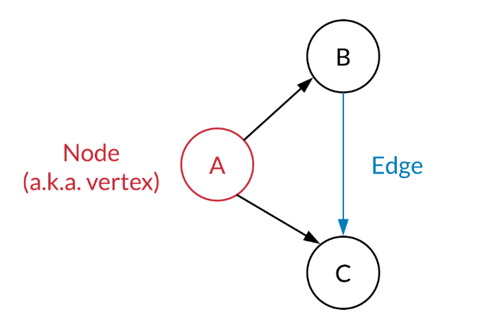
在一个Graph（图）中，包含两类：
- Vertex
- Edge
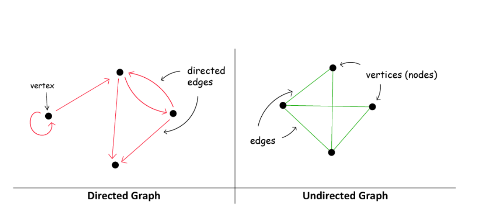
在一个图中：
- Edge可能是有向的
- Edge可以指向自己形成环
Graph Properties
图的性质。
E <= V^2
如果图中两个节点之间最多只能有一条路，而一个节点最多只能有一个自环，那么V和E之间遵循E <= V^2的关系。
只有当节点只有一个的时候，一个节点加一个自环，E == V^2。
degree(u)
- 对于无向图 (Undirected Graph)：
顶点
u的度数是指 与顶点u相连的边的数量 。 例如，在一个无向图中，如果顶点 A 连接到 B, C, D，那么顶点 A 的度数就是 3。 - 对于有向图 (Directed Graph)： 有向图的度数通常分为两种：
- 出度 (Out-degree)： 从顶点
u出发的边的数量。 - 入度 (In-degree)： 指向顶点
u的边的数量。 当提到degree(u)而没有特别指明时，通常指的是 出度 （尤其是在邻接列表的上下文中，因为它通常存储的是出边信息），或者是无向图的度数。
握手引理（Handshaking Lemma）：在任何无向图中，所有顶点的度数之和等于边数的两倍：
...
Density
图的密度是衡量一个图“有多满”的指标，即它有多少边是实际存在的，相对于它可能拥有的最大边数。
-
对于简单无向图：
-
最多可以有 \(V(V - 1)/2\) 条边。这是一个组合数 \(\binom{V}{2}\)。
-
密度通常定义为：
$$ \text{Density} = \frac{E}{V(V - 1)/2} $$ - 密度值介于 \(0\) 到 \(1\) 之间。密度接近 \(1\) 表示是稠密图 (Dense Graph)，接近 \(0\) 表示是稀疏图 (Sparse Graph)。 - 对于简单有向图：
-
最多可以有 \(V(V - 1)\) 条边。
-
密度通常定义为：
\[ \text{Density} = \frac{E}{V(V - 1)} \]
Graph Representation
在leetcode中，图相关的题一般涉及以下三种形式：
- Matrix
- Adjacency Matrix
- Adjacency List
Matrix
用Matrix表示的图一般用一个2d grid来表示，用0表示通，1表示blocked：
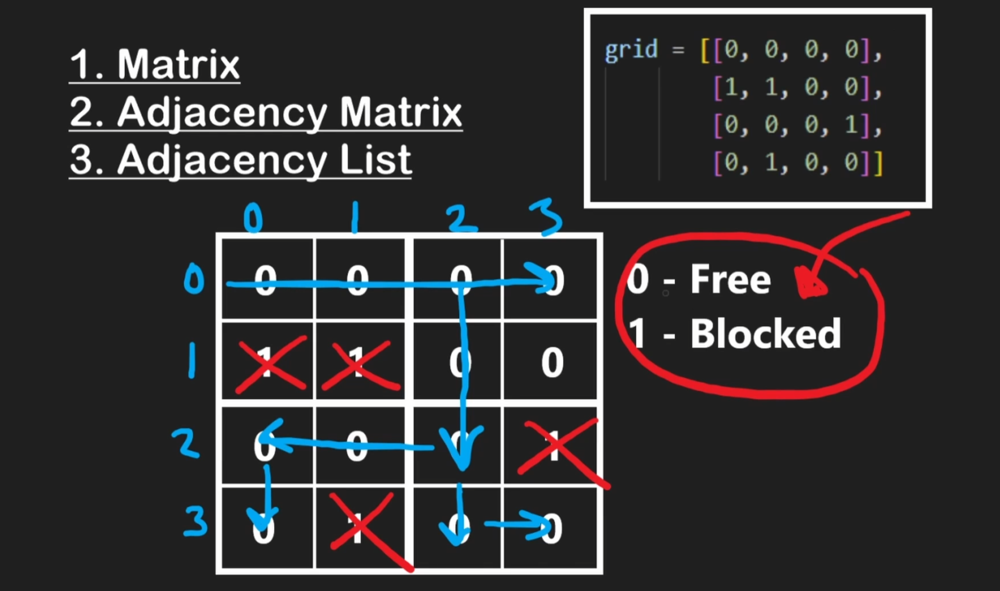
这种情况下一般可以用来表示一个无向图：
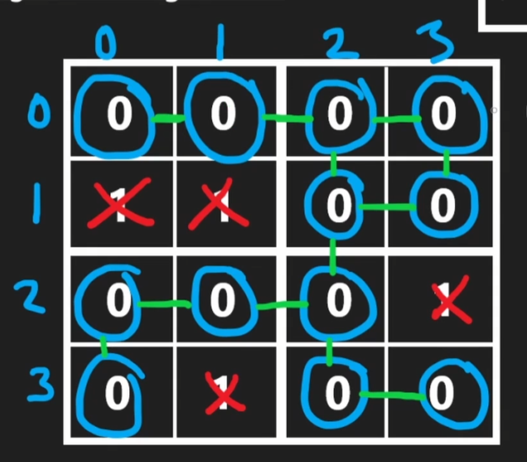
...
Adjacency Matrix
adjacency matrix是记录图的一个非常好的工具，他之所以能记录图，是因为在图中，如果我们对每个node进行编号，那么这个node和另外一个node（或者和自己）一定有一个唯一且确定的关系：从a到b是否连通。
如果我们把所有的点的关系记录下来，就可以形成一个matrix：
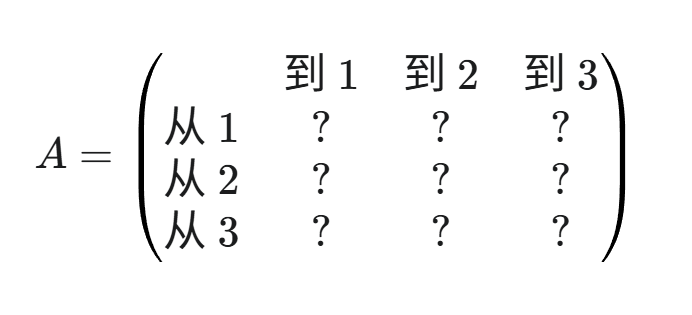
我们用：
A[i][j] = 1来表示从顶点i到顶点j有边A[i][j] = 0来表示从顶点i到顶点j没有边
用下面这个例子来说明：
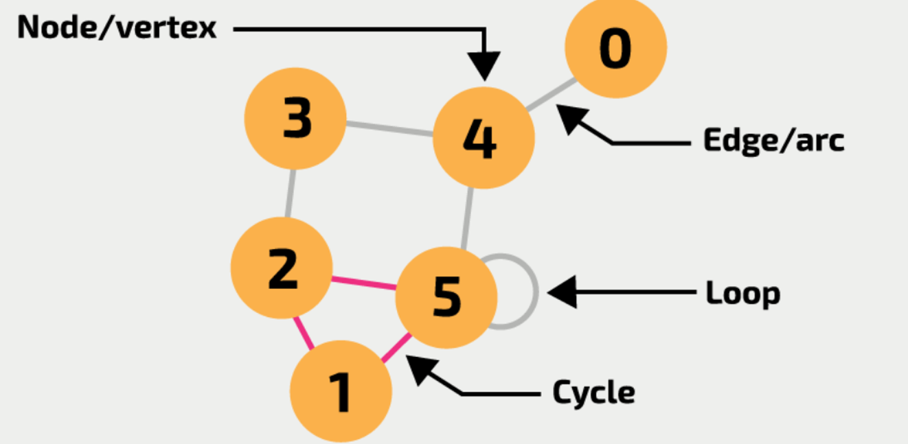
以上图为例，如果我们想把这个图用adjacency matrix记录，那么我们就要先把所有的顶点列出来并进行编号：0、1、2、3、4、5，一共有6个顶点。
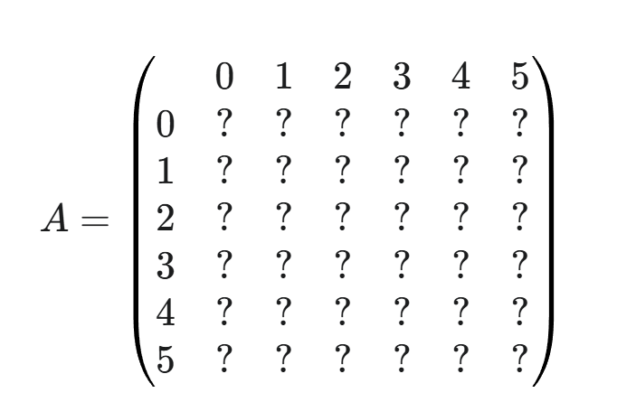
我们一个一个node来看：
- 1和2、5连通，所以1到2和5是1，即A[1][2]和A[1][5]是1，其他是0
- 以此类推，可以得到：
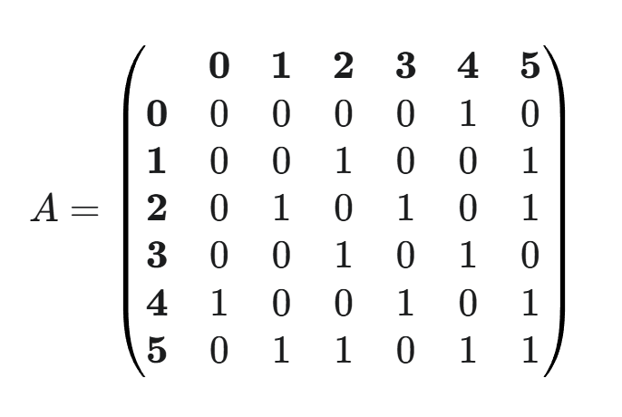
由于图例是无向图，所以途中的矩阵是对称的。如果是有向图，假设从1到2但是不从2到1，那么显然就不对称了。
对于一个adjacency matrix，显然其空间复杂度较大，为O(V^2)。因为无论图有多少条边，都要为可能的VxV对分配空间。对于稀疏图（E远小于V^2），这种方式会浪费大量空间。
时间复杂度：
- 检查边是否存在，直接访问A[u][v]，O(1)，优势巨大
- 查找所有邻居：traverse顶点所在行，O(V)
- 添加/删除边：O(1)，直接修改
- 遍历：O(N^2)
Adjacency List
Adjacency List和Adjacency Matrix都是用来存储graph的。
一般而言，一个图的Node的数据结构可以写为：
class Node {
public int val;
public List<Node> neighbors;
}
这个Node就是构成图的基本单元，每个node都有一个他自己的值，并且知道他的所有邻居是谁。
如果值是唯一的，值本身就可以作为index；如果值不唯一，则需要把值和index分开存储，一般把index作为key存储。
在处理这种问题的时候，如果我们直接对Node进行处理操作，那么操作起来会有点困难，所以这里引入以hashmap + list为组建核心的adjacency list作为工具来帮我们快速构建图。
...
Adjacency List Intro
Adjacency List在leetcode和interview中较为常见，用一个简单的数据结构就能记录value和adjacency：
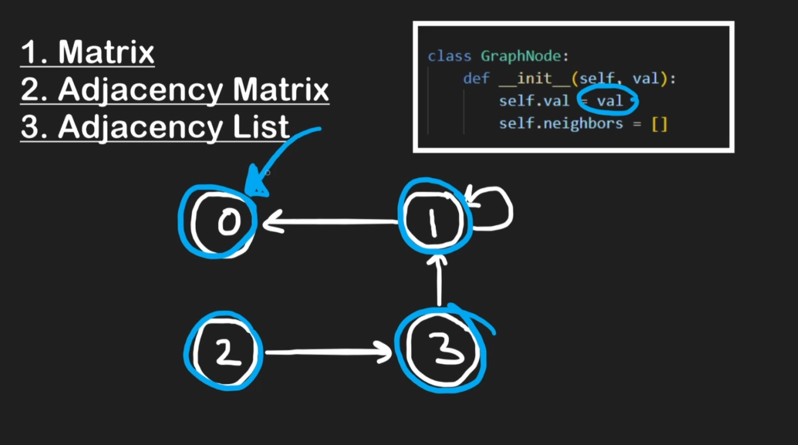
这里的neighbors只记录当前节点node可以通向的对象。
如果我们用adjacency list记录刚才的这个例子：

还是一样，我们先把所有的node列出来：
0: []
1: []
2: []
3: []
4: []
5: []
然后我们对每个node，把他相连的node添加上去：
0: [4]
1: [2, 5]
2: [1, 3, 5]
3: [2, 4]
4: [0, 3, 5]
5: [1, 2, 4, 5]
其中5连通自己，所以5也被记录在了5中。
Adjacency List的空间复杂度是O(V+E)，是稀疏图的最佳选择，因为他只存储实际存在的边。
时间复杂度：
- 检查边是否存在：遍历顶点的邻居，O(degree(u)), 最坏O(V)
- 查找所有邻居：遍历顶点u的邻居列表，O(degree(u))
- 添加边：O(1)
- 删除边：需要先找到，再删除：O(degree(u))
...
无重复值Implementation
Adjacency List实现起来并不难，首先我们需要构建一个原始数据，记录当下的边的情况：
# edges 是 "说明书"
edges = [["A", "B"], ["B", "C"], ["B", "E"], ["C", "E"], ["E", "D"]]
然后我们根据说明书搭建Adjacency List。Adjacency List（邻接表）的优点是可以快速找到一个node的所有neighbors。
我们用一个hashmap来构造邻接表：
adjList = {}
更具体地说，邻接表是由以下内容构建的：
- node目录：用hashmap记录所有node
- 邻居内容：每一个node key对应所有的邻居，用list记录
即
adjList = {key: nodes; values: node's neighbors}
然后我们可以根据edges中的信息，构建出这张表：
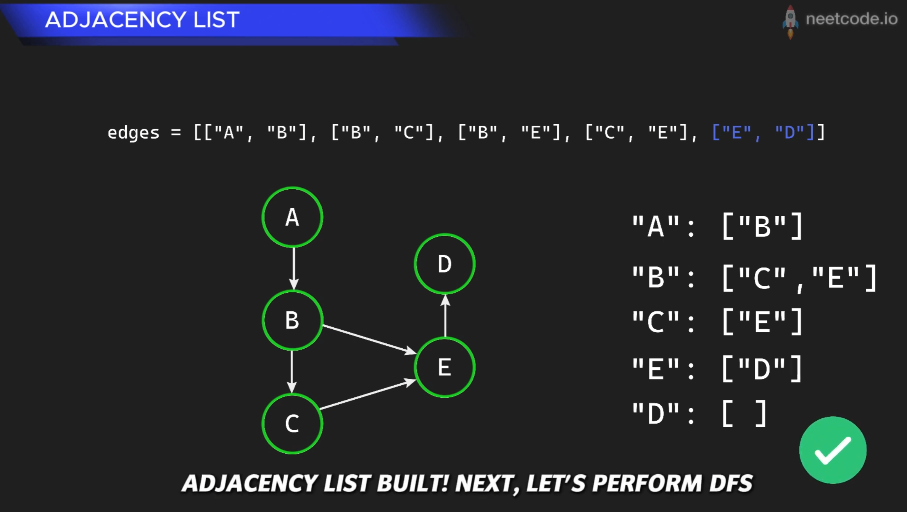
代码实现如下：
# edges 是 "说明书"
edges = [["A", "B"], ["B", "C"], ["B", "E"], ["C", "E"], ["E", "D"]]
# adjList 是我们准备要搭建的 "模型"，目前是空的
adjList = {}
# 开始阅读 "说明书"，一条一条地执行指令
for src, dst in edges:
# 指令: ["A", "B"]
# src = "A", dst = "B"
# 检查一下模型里有没有 "A" 和 "B" 这两个节点，如果没有就创建出来
if src not in adjList:
adjList[src] = [] # 在模型里为 "A" 创建一个空间，用来存放它的邻居
if dst not in adjList:
adjList[dst] = [] # 在模型里为 "B" 创建一个空间
# 核心步骤：执行指令，建立连接
# 在模型中，找到 "A" 的邻居列表，然后把 "B" 加进去
adjList[src].append(dst)
构建完成后，adjList就变成了：
{
"A": ["B"],
"B": ["C", "E"],
"C": ["E"],
"E": ["D"],
"D": []
}
...
有重复值Implementation
如果图中有重复值，又想用邻接表存储的话，需要对node升级一下：
- 标识符（ID）：必须是独一无二的唯一ID，作为key
- 值（Value）：可以重复的值，单独分开存储
这个方法是算法竞赛和工程实践中常用的方法，举例来说，假设图的输入是这样的：
- 节点的值 :
[5, 8, 5, 2](注意，索引0的节点和索引2的节点值都是5) - 边 :
(0, 1),(0, 2),(2, 3)(表示从ID为0的节点到ID为1的节点有边，以此类推)
我们的数据结构会变成这样：
- 邻接表
adjList: 键是节点的 唯一ID (整数) 。 - 值存储
nodeValues: 一个独立的数组或HashMap，用来通过ID查询节点的值。
# 节点的值 (索引就是它们的唯一ID)
nodeValues = [5, 8, 5, 2]
# 邻接表 (只关心结构，只存储ID)
adjList = {
0: [1, 2], # ID为0的节点连接到ID为1和ID为2的节点
1: [],
2: [3],
3: []
}
# 现在，我们既能表示图的结构，又能处理重复的值
print(f"节点ID 0 的值是: {nodeValues[0]}") # 输出 5
print(f"节点ID 2 的值是: {nodeValues[2]}") # 输出 5
print(f"节点ID 0 的邻居是ID为 {adjList[0]} 的节点") # 输出 [1, 2]
...
DFS in Adjacency List
假如我们现在有一个adjacency list，然后想看看target这个目标值是否在adj. list里，我们可以进行遍历。
对于图的遍历，标准的做法是DFS和BFS。那么为什么不直接把hashmap进行普通的hashmap traverse呢？他们不都是访问所有的元素，用了O(V+E)的时间吗？
这是因为，如果你直接迭代循环hashmap，你确实可以找到所有的点，但是这种访问是缺乏顺序的。如果问题不仅仅是有没有target，而是：
- Reachability: 我从节点A能否到达节点Z？
- Shortest Path: 从A到Z最少需要几步？（无权图）
- Cycle Detection: 图中是否有环路？
- Connected Components: 连通分量，即这张图是否完全连通？如果不是，他们分成了几个相互独立的小岛？
因此，我们直接学习标准图遍历，而不是学习一个只能解决有没有target的问题的解法。
Neetcode中的教程：（图片来自neetcode.io）
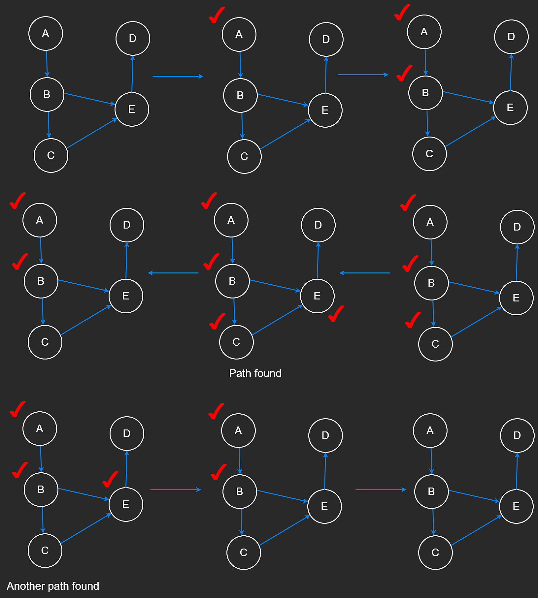
标准DFS实现：
def dfs_recursive(graph: dict, start_node: str) -> list:
"""
对图进行深度优先搜索 (DFS)，使用递归实现。
Args:
graph: 图的邻接表表示 (字典)。
start_node: 遍历的起始节点。
Returns:
一个包含DFS遍历顺序的节点列表。
如果起始节点不存在，则返回空列表。
"""
if start_node not in graph:
return []
visited = set()
path = []
# 定义一个辅助递归函数
def _dfs_helper(node):
# 访问当前节点
visited.add(node)
path.append(node)
for neighbor in graph.get(node, []):
if neighbor not in visited:
_dfs_helper(neighbor)
_dfs_helper(start_node)
return path
# --- 使用示例 ---
dfs_rec_path = dfs_recursive(graph_example, "A")
print(f"DFS (递归) 遍历路径: {dfs_rec_path}")
# 输出: DFS (递归) 遍历路径: ['A', 'B', 'D', 'C', 'E']
...
当图非常大的时候，推荐用迭代版DFS：
def dfs_iterative(graph: dict, start_node: str) -> list:
"""
对图进行深度优先搜索 (DFS)，使用迭代和栈实现。
Args:
graph: 图的邻接表表示 (字典)。
start_node: 遍历的起始节点。
Returns:
一个包含DFS遍历顺序的节点列表。
如果起始节点不存在，则返回空列表。
"""
if start_node not in graph:
return []
stack = [start_node] # 使用list作为栈
visited = set() # visited集合防止重复访问和死循环
path = []
while stack:
current_node = stack.pop()
# 注意：一个节点可能在栈里出现多次，但我们只在它第一次被弹出时访问它
if current_node not in visited:
visited.add(current_node)
path.append(current_node)
# 将邻居逆序压入栈，以保证遍历顺序与递归版一致
# (因为栈是后进先出)
for neighbor in reversed(graph.get(current_node, [])):
if neighbor not in visited:
stack.append(neighbor)
return path
# --- 使用示例 ---
dfs_it_path = dfs_iterative(graph_example, "A")
print(f"DFS (迭代) 遍历路径: {dfs_it_path}")
# 输出: DFS (迭代) 遍历路径: ['A', 'B', 'D', 'C', 'E']
...
BFS in Adjacency List
...
图片来自neetcode.io：
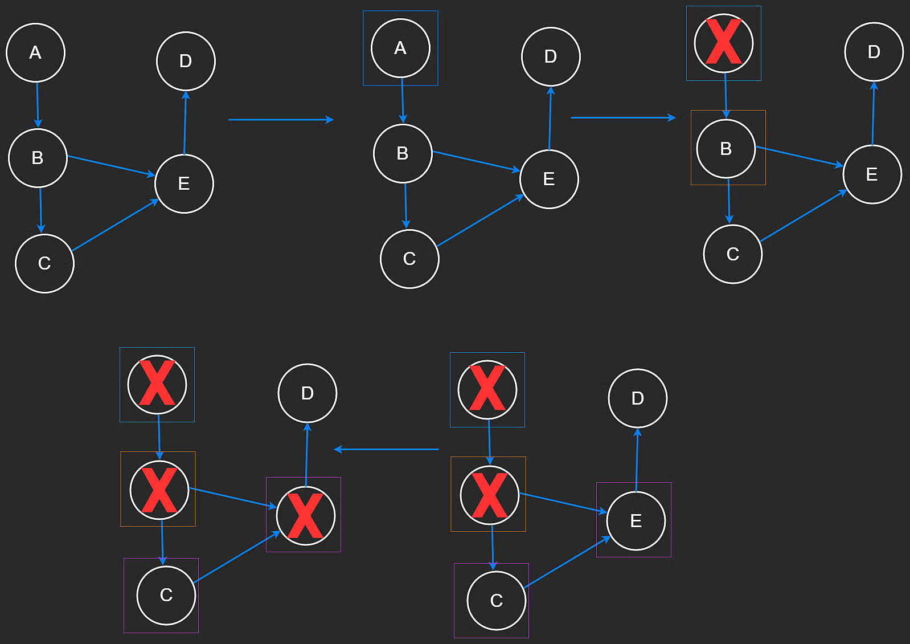
代码如下：
from collections import deque
def bfs(graph: dict, start_node: str) -> list:
"""
对图进行广度优先搜索 (BFS)。
Args:
graph: 图的邻接表表示 (字典)。
start_node: 遍历的起始节点。
Returns:
一个包含BFS遍历顺序的节点列表。
如果起始节点不存在，则返回空列表。
"""
# 1. 健壮性检查：确认起始节点在图中
if start_node not in graph:
return []
# 2. 初始化：使用高效的数据结构
queue = deque([start_node]) # 使用deque作为队列
visited = {start_node} # 使用set进行O(1)复杂度的快速查找
path = [] # 用于存储最终的遍历路径
# 3. 循环直到队列为空
while queue:
# 从队列左侧取出节点 (先进先出)
current_node = queue.popleft()
path.append(current_node)
# 遍历当前节点的所有邻居
# 使用 graph.get(current_node, []) 避免因节点没有邻居列表而报错
for neighbor in graph.get(current_node, []):
if neighbor not in visited:
# 将新发现的节点加入visited集合和队列
visited.add(neighbor)
queue.append(neighbor)
return path
# --- 使用示例 ---
bfs_path = bfs(graph_example, "A")
print(f"BFS 遍历路径: {bfs_path}")
# 输出: BFS 遍历路径: ['A', 'B', 'C', 'D', 'E']
...
DAG & Topo Sort
Directed Acyclic Graph, 简称DAG，即有向无环图。
Topo Sort即Topological Sort，拓扑排序。
DAG的Topological Sort拓扑排序是leetcode和interview的重点
...
Topological Sort
对于DAG图，如果想理清楚依赖关系，拓扑排序是必不可少的。
拓扑排序（Topological Sort）是对有向无环图（Directed Acyclic Graph，简称 DAG）的顶点进行的一种线性排序。
它的核心思想是：如果图中有从顶点 U 到顶点 V 的有向边（即 U -> V），那么在拓扑排序的结果中，顶点 U 总是出现在顶点 V 的前面。
简单来说，拓扑排序解决的是“先做A才能做B”这类依赖性问题。如果一系列任务或事件之间存在依赖关系，拓扑排序就能给出一个可行的执行顺序。
Topological sort的重点在于根据图的结构来进行排序，并且：
- 必须是有向图： 关系是单向的，例如“A 必须在 B 之前”，而不是“A 必须在 B 之前，B 也必须在 A 之前”。
- 不能有环： 图中不能有循环依赖。如果存在循环（例如，A 必须在 B 之前，B 必须在 C 之前，C 又必须在 A 之前），那么就不可能找到一个有效的线性顺序来完成所有任务，这种情况下，拓扑排序是无法进行的。
拓扑排序的典型应用：
- 课程先修关系（经典的course schedule）
- 编译器依赖、软件包管理、任务调度等
DFS解法
这个方法并非最适合解决拓扑排序的方法，可以了解一下，记住DFS是“反向”。
对于一个有向图，DFS法是反着来的：
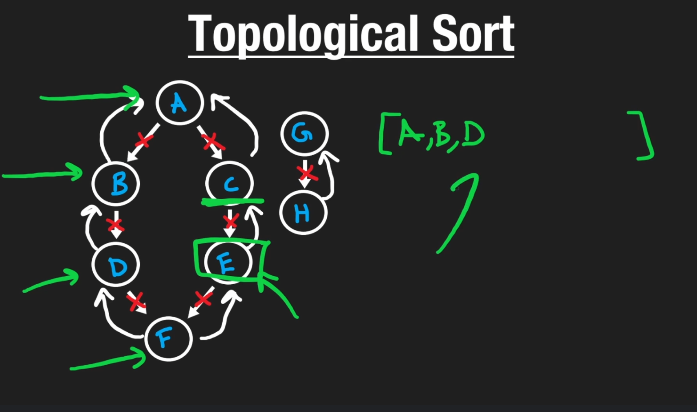
我们从结果出发，然后往回找，当找到没有前序内容或者前序内容都已经添加的时候，就把这个node添加进去。
当然，我们也可以顺着来，当找到最后的node的时候作为base case添加到result中，得到一个和正确排序正好相反的结果：
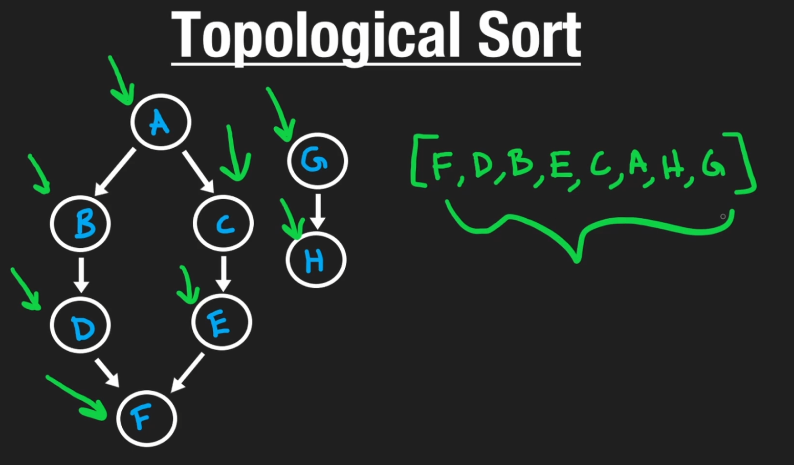
然后我们把result反过来（reverse）就可以了。
BFS解法
在course schedule问题中，我们一开始并不知道哪门课是图的起点。虽然DFS也可以解决，但是BFS法会更简单直观。BFS的拓扑排序也叫做Kahn's Algorithm，是DAG拓扑排序的经典解法。
Kahn's Algorithm所需的数据结构：
- 一个Queue：存储所有当前入度为0的nodes，记录当前可以处理的nodes
- 一个记录入度（In-degree）的list/hashtable：用于存放每个node有多少条指向它的边，例如
in_degree[A] = 2，意味着node A有两个前置依赖。 - 一个adjacency list：用于表示图的结构，即每个节点指向哪些其他节点。
针对一个DAG，Kahn's算法步骤如下：
遍历图中所有边，计算出每个节点的初始入度（in-degree）
初始化queue，将所有in-degree为0的节点全部放入
一个result，用来存储最终拓扑排序的结果
循环，当队列不为空时：
从queue中取出一个节点u，将u放入result
遍历u的所有邻居v：
对于每个邻居v，v的入度 -= 1（象征前置依赖已经满足）
如果邻居v的入度减1后变为0，则将v放入queue
（象征所有前置依赖都已经满足）
循环结束后，检查result中的节点数量：
如果result中的节点数量等于图中的节点数量：
说明该图是一个有效的拓扑排序
如果result中的节点数量小于图中的节点数量：
说明该图中存在环路（Cycle）
（环路中的节点入度永远无法变为0）
可以记忆一下标准模板：
indegree = {}
neighbors = {}
for i in range(numCourses):
indegree[i] = 0
neighbors[i] = []
for course, pre_course in prerequisites:
indegree[course] += 1
neighbors[pre_course].append(course)
queue = deque()
for node in indegree:
if indegree[node] == 0:
queue.append(node)
result = []
while queue:
node = queue.popleft()
result.append(node)
node_neighbors = neighbors[node]
for neighbor in node_neighbors:
indegree[neighbor] -= 1
if indegree[neighbor] == 0:
queue.append(neighbor)
if len(result) == numCourses:
return result # or return True, the DAG is valid
else:
return False # the DAG has circle
在分析时间复杂度的时候，N代表nodes数量，E代表边的数量：
- for循环numCourses: O(N)
- for循环prerequisites: O(E)
- for循环indegree: O(N)
- while循环queue: O(N)
- while循环中的for循环:O(E)
这里要注意，最终整体时间复杂度是O(N+E)，为什么嵌套在while循环里的O(E)是被加上去而不是乘上去的呢？
想象一下，你要规划一次全国旅行：
- N : 代表你要访问的 城市总数 。
- E : 代表连接这些城市的 公路总数 。
你的旅行计划（也就是我们的算法）分为两部分工作：
- 抵达每个城市（外层
while循环） : 每抵达一个城市，你都要去酒店办一次入住手续。因为你每个城市只去一次，所以你总共要办 N 次入住手续。 - 开车走公路（内层
for循环） : 每当你身处一个城市时，你会开车走完 从这个城市出发的所有公路 ，前往下一个城市。
现在我们来计算总工作量：
O(N*E)的错误逻辑 : 这种逻辑相当于说：“我每抵达一个城市（总共N个），就要把全国所有的高速公路（总共E条）都开一遍。” 这显然是荒谬的，没有人会这样旅行。O(N+E)的正确逻辑 : 我的总工作量是“ 所有城市的入住手续总和 ” 加上 “ 所有公路的驾驶里程总和 ”：- 办入住的总次数 = N
- 因为你的旅行计划会确保全国的每一条公路你都只走一次，所以开车走公路的总次数 = E
- 因此，总工作量 = O(N + E)
所以在course schedule问题以及类似的问题中，时间复杂度是O(N+E)，这是一个重要的知识点。
...
Disjoint Set
...
Multiset
...
Bloom Filter
...
Hash Table
作为数据结构的hash table，以hash function为核心，可以实现高效的O(1)的Search, Insert, Remove(查找、添加、删除)。
hash table的数据结构实现有以下重点内容：
- hash function，用来将要存储的对象的key转化为一个整数
- buckets：实际在底层存储内容的list/array，被认为是很多个bucket
- resizing，扩容。当hash table（一般底层是数组）中存储的元素达到一定比例时，一般是一半时，为了维护高效性能，创建的一个新的更大容量的底层数组
- re-hashing: 当hash table扩容后，所有的元素都要重新计算hash并重新存储。
- collisions: 哈希冲突，即经过hash function的计算后，不同的key转换后是一个整数，这个时候就出现了collisions。
- Chaining: 链表法，在底层数组的每个bucket(即索引位置)上存放linked list。这样已经有内容的话，就作为一个新的node添加上去。
- Open Addressing: 发生冲突的时候，寻找一个空的位置存放。寻找空位的过程称为Probing（探查）。probing设计起来比较麻烦，无特殊原因一般不使用。
...
...
...
...
LRU Cache
...
...
...
...
...